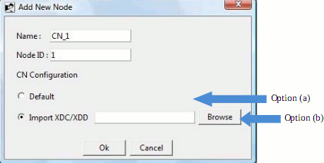
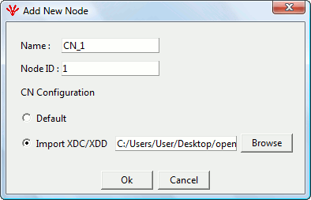

A CN Node can be added by right-clicking on the MN Node. In the small menu that appears, select 'Add CN...' as shown in Figure 9
Figure 9
After clicking on ‘Add CN’ a pop-up will appear where the user can enter CN related information and can select the xdc/xdd files for that CN as shown in Figure 10.
CN Name - Name of the CN. This name will be visible in the tree. The maximum length of CN Name is 32 characters.
CN ID (Node ID) - NodeID of the CN. NodeID can only be between 1 to 239

Figure 10
Like MN, CN can also be added with two options as shown in Figure 11 :
Default - A default XDD for CN will be used in this case. This file will be installed with the installation of the openConfigurator. This file is named as openPOWERLINK_CN.
Import XDC/XDD – The User can import his/her own XDD/XDC file for the CN.

Figure 11
The user selects the xdd/xdc file and then presses ‘OK’

Figure 12
CN Node will be added to the tree as shown in Figure 13.

Figure13
Expanded view of CN Node can be seen by clicking the ‘+’ sign in front of the CN node. The view of the tree will be visible as in the Figure 14

Figure14